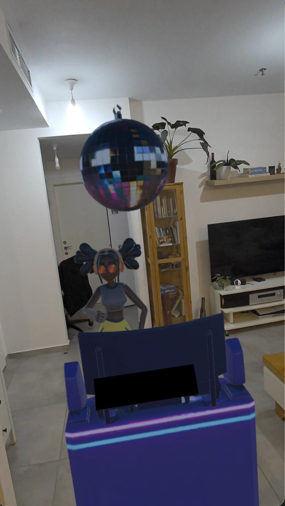

A virtual DJ set in your actual living room. Wave, clap or throw something and the room answers. Built on Quest 3 in four weeks.
I wanted to know how little you need before a room starts to feel occupied. No menus, no controller tutorial. Just your hands and whatever's already in your living room.
Most VR music apps are something you watch. It's impressive for three minutes and then you take the headset off. I wanted the energy in the room to be yours to push around, but the second you add faders and menus you've built a DJ tool, and nobody wants to learn a DJ tool at a party.
Player controls DJ interactions through gestures (left) and reactive lighting synchronized to music (right).
The DJ stands in your actual living room, so there's nothing to explain. You already know where you are. What it costs: I gave up all control of the set. Every room is a different size, colour and light level, and the thing has to hold up in all of them instead of one scene I could art-direct.
Wave and clap instead of pressing buttons. What it costs: a much smaller vocabulary. Four gestures is nothing next to a menu, and hand tracking drops out when your hands leave the sensors. But a party experience that needs a tutorial isn't a party experience.
I boxed the whole thing to four weeks to answer one question, does gesture-driven presence work at all, rather than building toward something shippable. What it costs: it stayed a build, not a product. No onboarding, no session structure, nothing to come back for. That was the deal I made with myself, and I'd make it again: I got the answer, and the answer was worth more than a half-finished app.

This is the actual room, through passthrough. No set, no virtual environment. The reason it works is that it's somewhere you already recognise.
My first pass at audio reactivity felt random. Lights moving near the music rather than with it, which reads as broken. Snapping the light decay hard onto beat transients fixed it completely. Same lights, same track; suddenly the DJ is listening. Timing was the whole thing.
Unity with the Meta XR SDK, passthrough and hand tracking, plus light real-time audio analysis driving the lighting.
Same habit in other places: a Unity puzzle-battler, a level editor with win-rate data, and an iOS app that's live.
See More Work